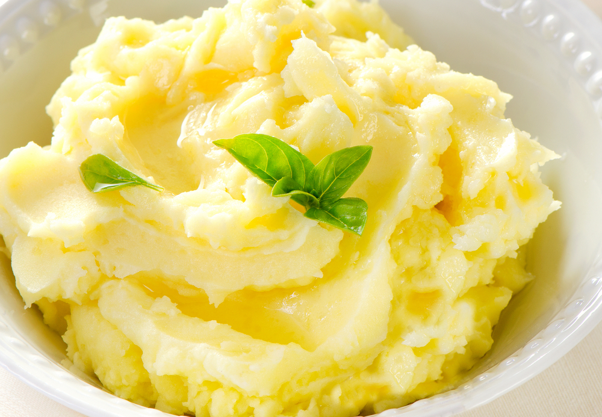

Mashed Potatoes

If you love good, old fashioned mashed
potatoes this is the perfect recipe. Simple and delicious.
Mashed potatoes are often made with whole milk or cream, melted butter and plenty of salt.
Those creamy bites of goodness can easily derail any waist-friendly or heart-healthy diet.
Mashed potatoes are a great place to start. In fact, potatoes are one of the most
nutritious items in the produce department. A medium potato eaten with its
skin on
Ingredients
- 2 pounds baking potatoes, peeled and quartered
- 2 tablespoons butter
- 1 cup milk
- salt and pepper to taste
Steps
- Bring a pot of salted water to a boil.
- Add potatoes and cook until tender but still firm, about 15 minutes; drain.
- In a small saucepan heat butter and milk over low heat until butter is melted.
- Using a potato masher or electric beater, slowly blend milk mixture into potatoes until smooth and creamy.
- Season with salt and pepper to taste.